| 日付 | 2015年6月13日（土） |
|---|---|
| 山域 | 南アルプス |
| メンバー | 家族（妻、長女・4歳、長男・2歳） |
| 山行形態 | 子連れ日帰り |
| アクセス | 車 |
| ルート (Map) | 甘利山駐車場 (8:53) - (9:17) 甘利山 (9:25) - (9:59) 奥甘利山 - (11:00) 大西峰 - (11:28) 千頭星山 (12:08) - (12:29) 大西峰 - (13:06) 奥甘利山 (13:16) - (13:45) 甘利山 (14:04) - (14:23) 甘利山駐車場 |
甘利山は南アルプス前衛の山で、レンゲツツジの咲く山として有名だ。
花期は6月～7月と、ちょうど見ごろを迎えていそうなので、
梅雨の晴れ間に訪れてみることにする。
甘利山の駐車場に到着。標高1640m。
9時前には駐車場に着いたのだが、すでに車がいっぱい停まっている。皆、早起きだ。

駐車場のすぐ側からレンゲツツジが咲いている。
ところどころ柵で囲われているが、何のためなのだろう？
少なくともレンゲツツジは有毒植物のため、食害には合わないはずだ。
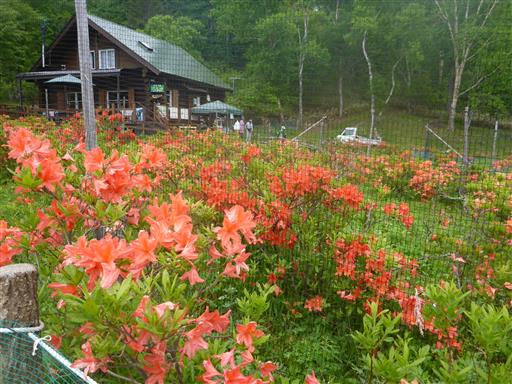
足元に可愛らしいスズランの花が咲いている。
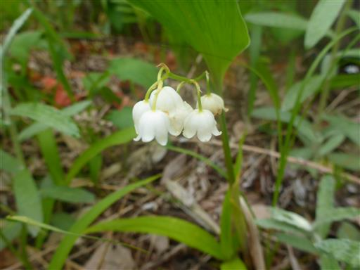
こちらはマイヅルソウ。小さくて目立たないが大群落を作っている。
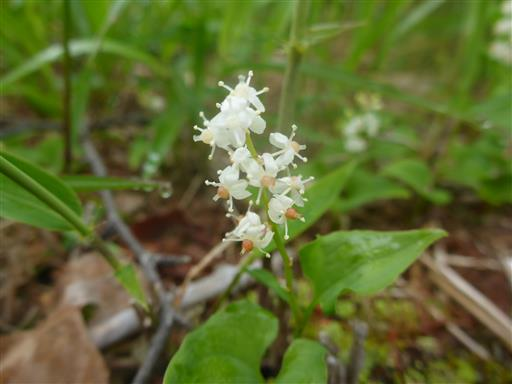
ウマノアシガタ。別名キンポウゲ。
花弁に光沢があり美しい。こちらも群生している。
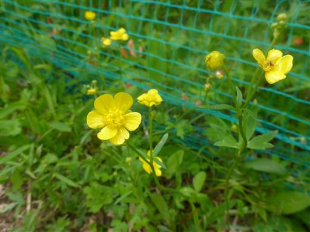
オオヤマフスマ。駐車場でもらったパンフレットに名前が載っていた。
初めて見る花だ。
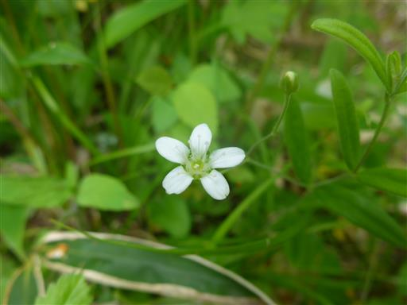
レンゲツツジの咲く高原を歩く。
息子は花を1つ1つ指差して歩いているため、なかなか前に進まない。
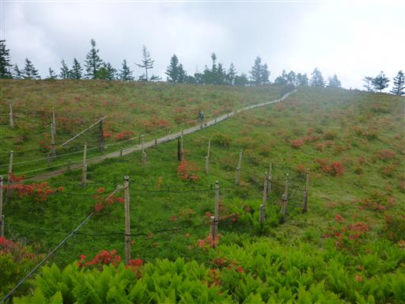
甘利山山頂に到着する。標高1731m。
山頂は観光客で賑わっている。
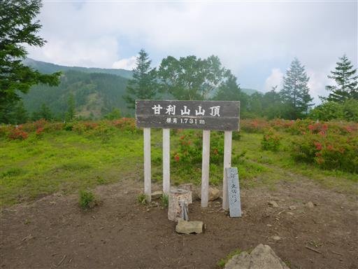
甘利山まで普通に歩けば15分程度なので、今日はその先の千頭星山まで歩く予定だ。
甘利山から先は笹原が広がり、若干道が細くなる。
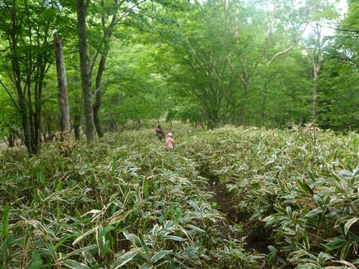
今日は雲が多く、余り展望が望めない。
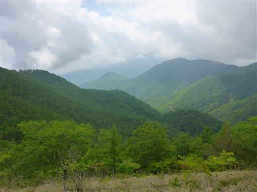
奥甘利山に到着。樹林に囲まれた地味な山頂だ。
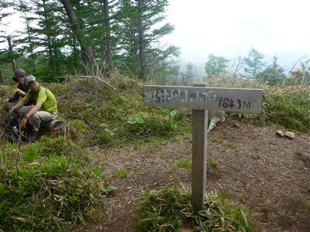
山頂直下にヤマツツジが咲いている。
花の色はレンゲツツジとよく似ているが、全体の雰囲気はだいぶ違う。
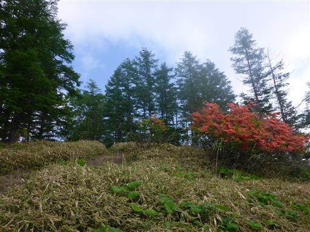
さらに千頭星山に向けて歩を進める。周囲は針葉樹林帯が広がっている。
緩やかな道が続くかと思ったら、結構きつい登りもある。
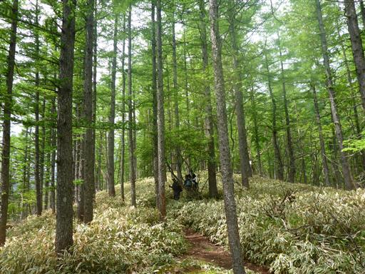
サルオガセがところどころで見られる。
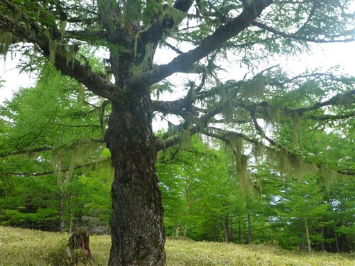
行程が長いので、道が平らになったところで小休止。
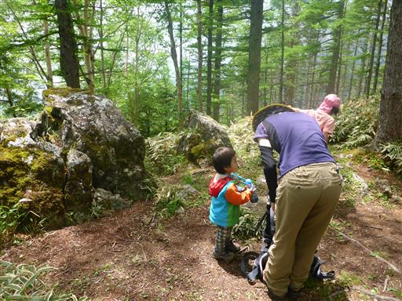
山頂が近づくと気持ちの良い笹原が広がってくる。
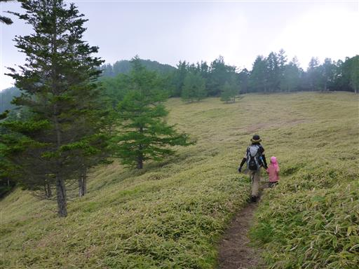
千頭星山の山頂に到着する。標高2139m。
樹林に囲まれた暗い山頂だが、意外に登山者の数は多い。
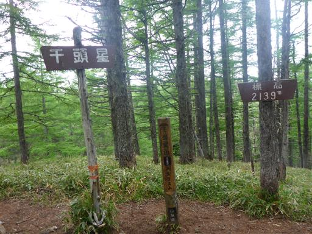
昼食をとったら下山を開始する。太陽が出てきて、だいぶ明るくなってきた。
もっと晴れれば南アルプスの鳳凰山が見えるらしいのだが…
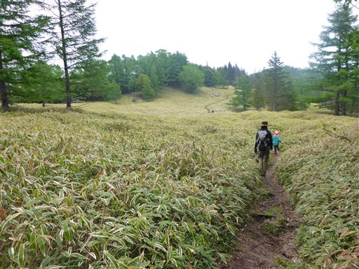
以前登った櫛形山が見えている。なかなか立派な山容だ。
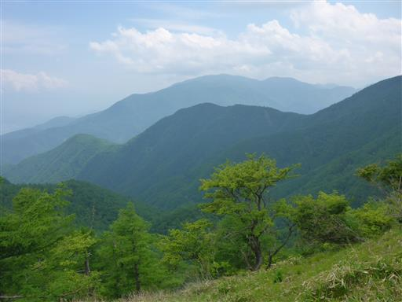
再び甘利山に戻ってくる。
太陽が出ているため、朝よりも景色が美しい。
残念ながら富士山はまだ雲に隠れたままだ。
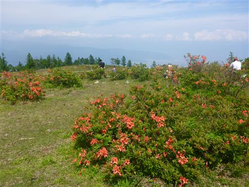
眼下にレンゲツツジの群落が広がっている。
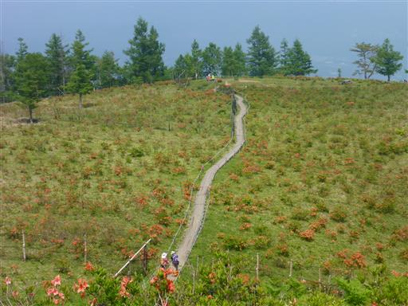
ゆっくり休憩したら山頂を後にする。駐車場まであと僅かだ。
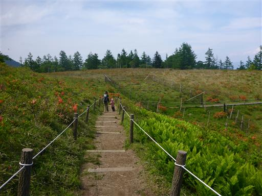
レンゲツツジに囲まれた木道を歩く。
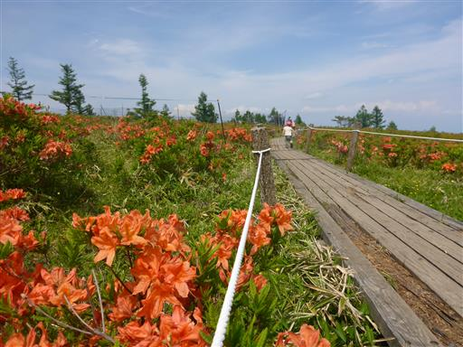
駐車場に到着。まだまだ観光客の数は多い。
快晴でなかったのが残念だが、久々のレンゲツツジをゆっくり鑑賞できた。
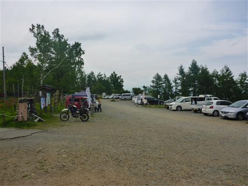